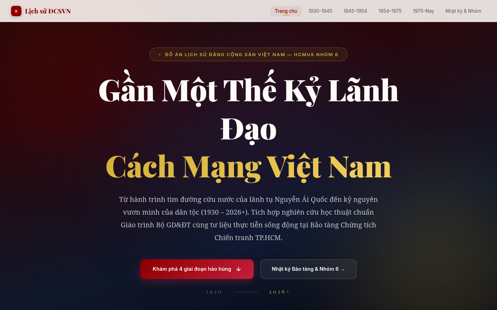
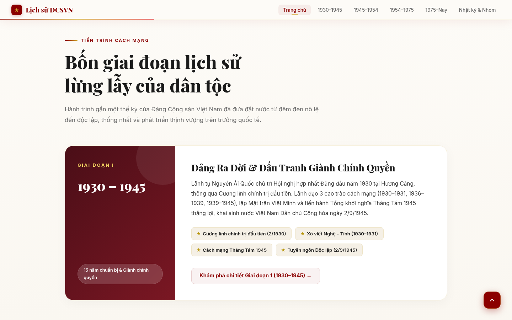
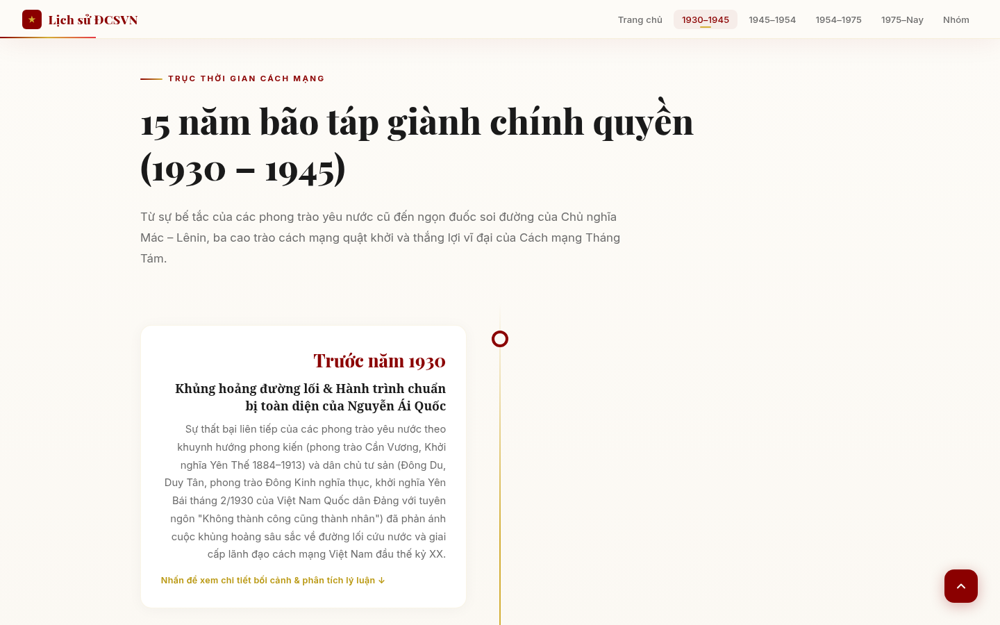
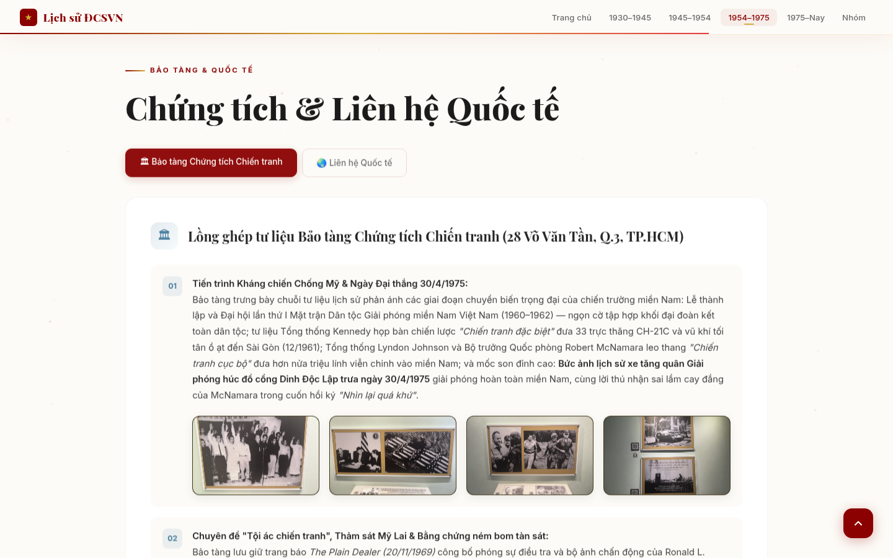
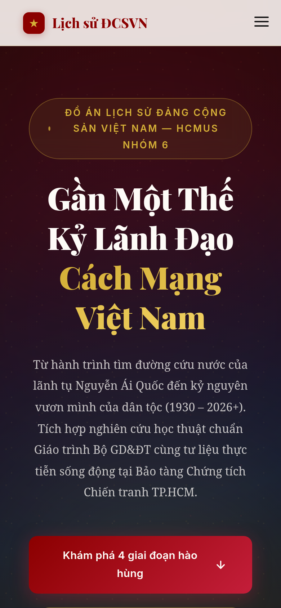
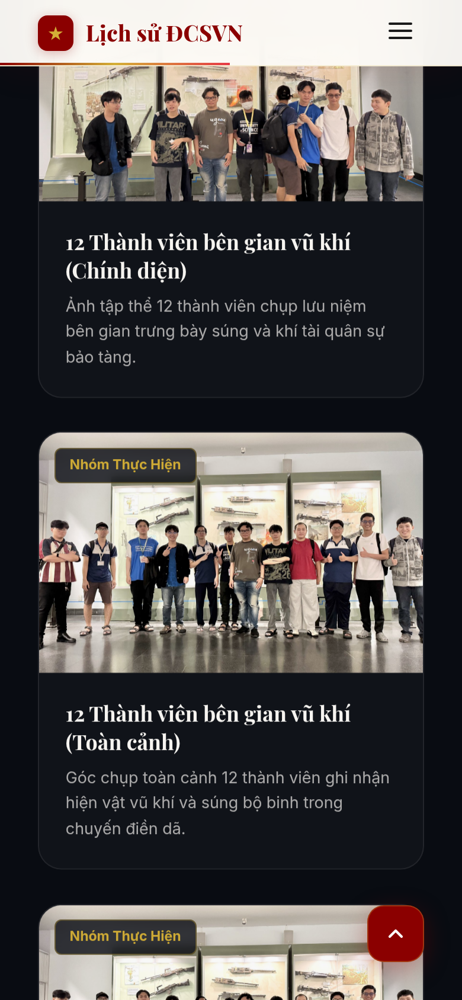
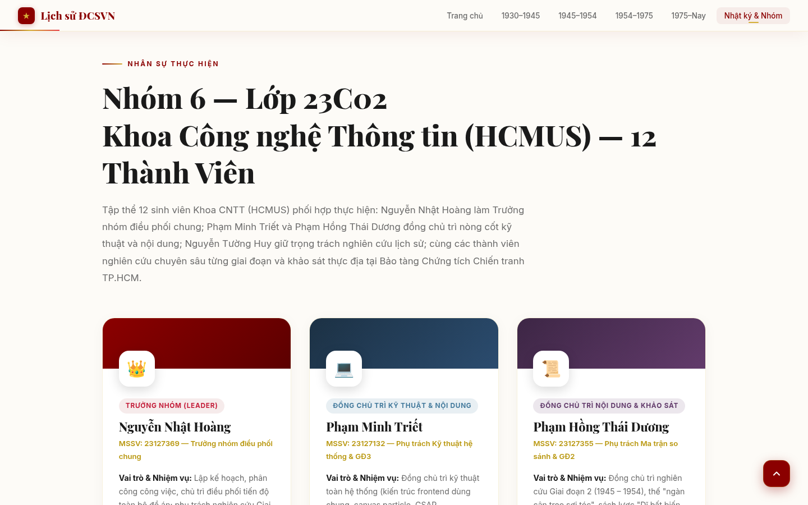
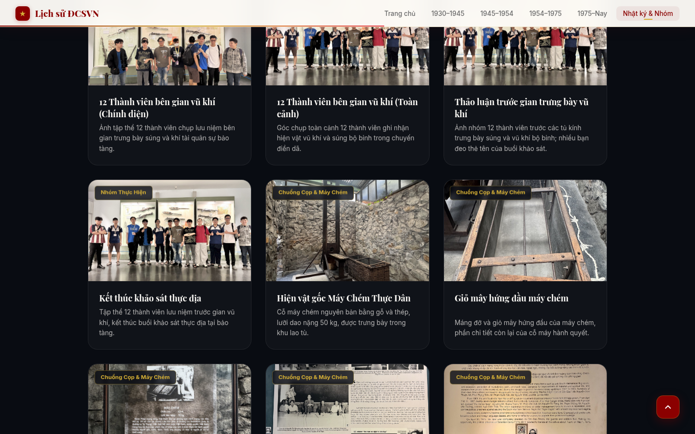
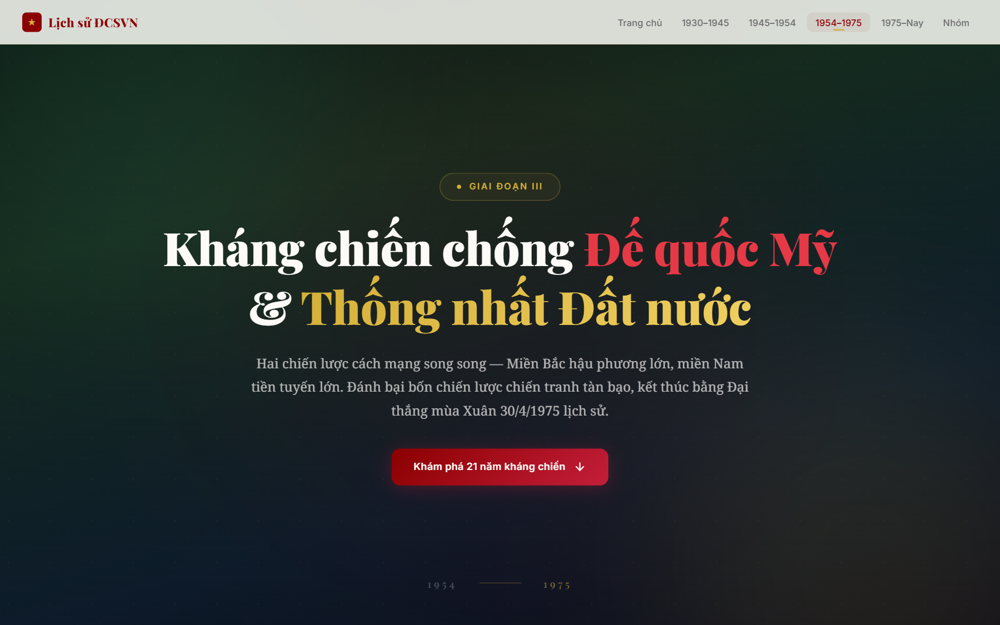
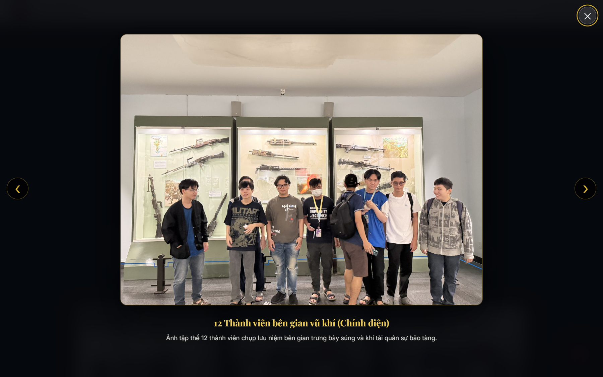

Sản phẩm trực tuyến:
Nhóm 6 gồm 12 thành viên. Cả nhóm cùng tham gia khảo sát thực địa tại Bảo tàng Chứng tích Chiến tranh (28 Võ Văn Tần, Quận 3, TP.HCM), sau đó phân công nghiên cứu, biên soạn và hoàn thiện sản phẩm.
| STT | Họ và tên | MSSV | Vai trò | Phụ trách chính |
|---|---|---|---|---|
| 1 | Nguyễn Nhật Hoàng | 23127369 | Trưởng nhóm | Điều phối chung; tổng hợp, kiểm duyệt và nghiệm thu nội dung |
| 2 | Phạm Minh Triết | 23127132 | Đồng chủ trì Nội dung & Thiết kế | Thiết kế giao diện; nội dung Giai đoạn 3 |
| 3 | Phạm Hồng Thái Dương | 23127355 | Đồng chủ trì Nội dung & Khảo sát | Ma trận so sánh 4 giai đoạn; nội dung Giai đoạn 2 |
| 4 | Nguyễn Tường Huy | 23127014 | Nghiên cứu Giai đoạn 1 | Cương lĩnh 1930, Luận cương 10/1930, Xô viết Nghệ Tĩnh |
| 5 | Đinh Ngọc Anh Dương | 23127039 | Khảo sát điền dã | Tư liệu ảnh bảo tàng; hỗ trợ nội dung Giai đoạn 4 |
| 6 | Bùi Thế Anh | 23127021 | Nghiên cứu Giai đoạn 2 | Đường lối kháng chiến; Chiến dịch Điện Biên Phủ |
| 7 | Đặng Anh Kiệt | 23127077 | Khảo sát Giai đoạn 3 | Chuyên đề Đường 1C — Thanh niên Xung phong Tây Nam Bộ |
| 8 | Nguyễn Bình An | 23127149 | Khảo sát chuyên đề tội ác | Tội ác chiến tranh, thảm sát Sơn Mỹ, bằng chứng ném bom |
| 9 | Trần Sở Vinh | 23127282 | Khảo sát chuyên đề Da cam | Chiến dịch Ranch Hand, hậu quả Dioxin, tẩy độc |
| 10 | Trần Quang Phúc | 23127302 | Nghiên cứu chuyên đề Quốc tế | Phong trào quốc tế ủng hộ Việt Nam |
| 11 | Phạm Anh Hào | 23127362 | Nghiên cứu chuyên đề Ngoại giao | Nguyễn Thị Bình và Hiệp định Paris 1973 |
| 12 | Nguyễn Đức Nhật Minh | 23127421 | Nghiên cứu Giai đoạn 4 | Đổi mới 1986–nay; tầm nhìn 2030–2045 |
Bảng 1 — Phân công 12 thành viên. Nội dung chuyên môn được đối chiếu chéo trước khi đưa lên website.
Môn Lịch sử Đảng Cộng sản Việt Nam không chỉ yêu cầu ghi nhớ sự kiện, mà còn cần gắn nội dung giáo trình với chứng tích thực tế. Giáo trình chuẩn (NXB Chính trị Quốc gia Sự thật, 2021) được tổ chức thành bốn phần lớn: phần nhập môn và ba chương lịch sử 1930–1945, 1945–1975, 1975–nay.
Nhóm chọn hình thức website trực quan để đưa nội dung giáo trình đến gần hơn với người học. Sản phẩm gồm bốn giai đoạn lịch sử, mỗi giai đoạn có trục thời gian, nội dung trọng tâm, số liệu nổi bật, hình ảnh chứng tích bảo tàng và liên hệ quốc tế.
Đối tượng sử dụng là sinh viên, giảng viên và những người quan tâm đến lịch sử Việt Nam hiện đại. Phạm vi nội dung từ năm 1930 đến nay, trọng tâm là bốn giai đoạn: 1930–1945, 1945–1954, 1954–1975 và 1975–nay.
Sản phẩm không nhằm thay thế giáo trình. Website là công cụ hỗ trợ ôn tập và trình bày, còn giáo trình vẫn là nguồn nội dung nền tảng.
Sản phẩm gồm 6 phần nội dung:
| Phần | Nội dung chính |
|---|---|
| Trang chủ | Giới thiệu khái quát; bốn thẻ giai đoạn; ba mục: chứng tích bảo tàng, so sánh bốn giai đoạn và tầm nhìn 2030–2045. |
| Giai đoạn 1 (1930–1945) | Thành lập Đảng, Luận cương 10/1930, Xô viết Nghệ Tĩnh, phong trào 1936–1939, Việt Minh, Cách mạng Tháng Tám. |
| Giai đoạn 2 (1945–1954) | Chính quyền non trẻ, “hòa để tiến”, Toàn quốc kháng chiến, Việt Bắc 1947, Biên giới 1950, Điện Biên Phủ, Giơnevơ. |
| Giai đoạn 3 (1954–1975) | Hai miền, Đồng khởi, Mặt trận Dân tộc Giải phóng, bốn chiến lược chiến tranh, Mậu Thân, Paris 1973, Đại thắng 30/4. |
| Giai đoạn 4 (1975–nay) | Thống nhất nhà nước, bảo vệ Tổ quốc, các bước đột phá 1979–1986, Đổi mới, Cương lĩnh 1991/2011, Đại hội XIII, tầm nhìn 2030–2045. |
| Nhóm & Nhật ký | Hồ sơ 12 thành viên, 6 chuyên đề khảo sát, kho ảnh tư liệu, cảm nhận và tài liệu tham khảo. |
Bảng 2 — Sáu phần nội dung của sản phẩm.
Mỗi giai đoạn được trình bày theo cùng một cấu trúc: phần mở đầu, trục thời gian các mốc chính, ba nội dung trọng tâm, bốn số liệu nổi bật, chứng tích bảo tàng và liên hệ quốc tế. Cách trình bày này giúp người xem vừa nắm được mạch lịch sử, vừa có thể dừng lại ở từng sự kiện để đọc sâu hơn.
Sáu phần dùng chung một hệ thống trình bày: màu sắc, kiểu chữ, thanh điều hướng và cách bố trí hình ảnh. Trang chủ dẫn vào bốn giai đoạn; trang Nhóm & Nhật ký lưu hồ sơ, kho ảnh và cảm nhận của nhóm. Website là sản phẩm tĩnh, truy cập trực tiếp bằng trình duyệt, không cần cài đặt; khi nội dung được cập nhật, bản trực tuyến thay đổi theo cùng một địa chỉ.


Nội dung bốn giai đoạn được biên soạn dựa trên Giáo trình Lịch sử Đảng Cộng sản Việt Nam (NXB Chính trị Quốc gia Sự thật, 2021). Cấu trúc ba chương của giáo trình được giữ nguyên; riêng Chương 2 (1945–1975) được tách tại mốc 1954 để người đọc dễ tra cứu, không làm thay đổi nội dung lịch sử.
| Giai đoạn | Mốc tiêu biểu | Trọng tâm |
|---|---|---|
| 1930–1945 | 3/2/1930 thành lập Đảng; 10/1930 Luận cương chính trị; 1930–1931 Xô viết Nghệ Tĩnh; 1936–1939 Mặt trận Dân chủ; 1941 Việt Minh; 8/1945 Cách mạng Tháng Tám; 2/9/1945 Tuyên ngôn Độc lập. | Con đường cứu nước, vai trò lãnh đạo của Đảng và sự chuẩn bị cho tổng khởi nghĩa. |
| 1945–1954 | 1945 chính quyền non trẻ; 1946 Toàn quốc kháng chiến; 1947 Việt Bắc; 1950 Biên giới; 1954 Điện Biên Phủ; 21/7/1954 Hiệp định Giơnevơ. | Bảo vệ chính quyền, đường lối kháng chiến toàn dân, toàn diện và thắng lợi quyết định. |
| 1954–1975 | 1954–1959 đấu tranh giữ hòa bình; 1960 Đồng khởi; 1960 Mặt trận Dân tộc Giải phóng; 1965–1968 chiến tranh cục bộ; 1968 Mậu Thân; 1972 Điện Biên Phủ trên không; 1973 Hiệp định Paris; 1975 Đại thắng mùa Xuân. | Hai miền, bốn chiến lược chiến tranh, ngoại giao kết hợp quân sự và thống nhất đất nước. |
| 1975–nay | 1976 thống nhất nhà nước; 1979–1986 các bước đột phá; 1986 Đổi mới; 1991 và 2011 Cương lĩnh; 2021 Đại hội XIII; tầm nhìn 2030–2045. | Khắc phục hậu quả chiến tranh, bảo vệ Tổ quốc, Đổi mới và hội nhập. |
Bảng 3 — Các mốc chính dùng để tổ chức trục thời gian. Danh sách không thay thế nội dung đầy đủ của giáo trình.
Bên cạnh nội dung giáo trình, nhóm khai thác sáu chuyên đề tại Bảo tàng Chứng tích Chiến tranh:
| STT | Chuyên đề | Nội dung chính |
|---|---|---|
| 1 | Chuồng Cọp & Máy chém | Hệ thống lao tù thực dân, hiện vật máy chém, khí tiết của các chiến sĩ tiền bối. |
| 2 | Tội ác chiến tranh & Sơn Mỹ | Bằng chứng ném bom, thảm sát Mỹ Lai, báo chí quốc tế và phong trào phản chiến. |
| 3 | Chất độc Da cam | Chiến dịch Ranch Hand, hậu quả Dioxin qua các thế hệ, nỗ lực tẩy độc thời bình. |
| 4 | Nguyễn Thị Bình & Paris 1973 | Đàm phán Paris, nghệ thuật “vừa đánh vừa đàm”, Hiệp định Paris 27/1/1973. |
| 5 | Đường 1C | Tuyến vận tải của Thanh niên Xung phong Tây Nam Bộ, hơn 13.000 tấn vũ khí. |
| 6 | Quốc tế ủng hộ Việt Nam | Phong trào phản chiến tại Mỹ, châu Âu và các nước; tình cảm quốc tế với Việt Nam. |
Bảng 4 — Sáu chuyên đề khảo sát tại bảo tàng.
Trước khi đưa vào sản phẩm, nhóm đã kiểm tra lại các mốc thời gian và số liệu, đối chiếu với giáo trình, tư liệu bảo tàng và các nguồn chính thống để bảo đảm nội dung thống nhất.


Người xem bắt đầu từ trang chủ, chọn một trong bốn giai đoạn, rồi đi theo trục thời gian từ mốc đầu đến mốc cuối. Ở mỗi mốc, người xem có thể mở rộng để đọc diễn biến, xem hình ảnh chứng tích và liên hệ với bối cảnh quốc tế.
Các thẻ “Nội dung trọng tâm” được trình bày như ba cột mốc phân tích, giúp người đọc nhanh chóng nắm được ý chính của giai đoạn. Phần “Con số biết nói” tập trung vào bốn chỉ số tiêu biểu, tạo điểm nhấn trực quan và dễ nhớ.
Trang Nhóm & Nhật ký ghi lại quá trình khảo sát thực địa: hồ sơ 12 thành viên, sáu chuyên đề nghiên cứu, kho ảnh tư liệu và phần cảm nhận sau chuyến đi. Đây là phần kết nối giữa nội dung lịch sử với trải nghiệm học tập thực tế của nhóm.
Về hình thức, sản phẩm sử dụng tông màu đỏ – vàng, hình ảnh bảo tàng và kiểu chữ trang trọng, phù hợp với chủ đề lịch sử. Các trang được thiết kế để đọc thuận tiện trên cả máy tính và điện thoại.


Sản phẩm đã hoàn thiện với sáu phần nội dung, truy cập được trên máy tính và điện thoại tại địa chỉ:
Trước khi hoàn thiện, nhóm đã kiểm tra nội dung, hình ảnh và các mục tương tác trên cả máy tính và điện thoại. Các trang hiển thị ổn định; nội dung bốn giai đoạn được trình bày đầy đủ, đúng cấu trúc.
Các hình dưới đây được chụp trực tiếp từ website đang chạy, dùng cùng một phiên bản với địa chỉ công khai ở trên.



